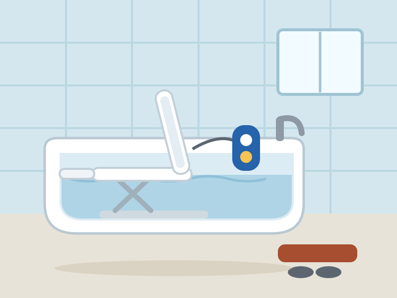

AmeriGlide Reclining Bath Lift — available from US Medical Supplies. Illustration by HomeEnabled, based on the manufacturer's current model.
Ask physical therapists where falls happen and the bathtub is always near the top of the list. The combination is unforgiving: slick surfaces, hard edges, and the deep knee-bend required to sit down at floor level and rise again. Many people quietly give up real baths years before they give up anything else — switching to hurried, unsatisfying sponge baths out of fear rather than preference.
The AmeriGlide Reclining Bath Lift gives baths back. It's a waterproof, battery-powered seat that sits inside your existing tub. You transfer on at rim height, press a button, and the seat lowers you smoothly to within a couple of inches of the tub floor — deep enough for a proper, warm soak. Another press raises you back to rim height when you're done. No remodeling, no plumbing, no contractor.
The HomeEnabled Verdict: A simple machine that returns a simple pleasure. If the bathtub has become the scariest place in the house, fix it for $649 before you spend thousands anywhere else.
Why It Made Our List
Of every bathroom product we tested this year, the bath lift had the highest delight-per-dollar. Walk-in tubs are superb but cost thousands and require renovation; grab bars help but don't address the fundamental challenge of getting down to, and up from, the bottom of a tub. The bath lift solves that exact problem for hundreds, not thousands.
We chose AmeriGlide's unit specifically for its reclining backrest — a feature missing from many budget lifts — and the built-in safety logic that refuses to lower you unless the battery holds enough charge to raise you back up.
Key Features
- Smooth powered lowering and raising — travels from rim height to about 2 inches above the tub floor and back at the touch of a button.
- Reclining backrest — tilts back as you reach the bottom so you can settle into the water rather than perch upright.
- Waterproof floating hand control — the sealed handset floats if dropped and contains the rechargeable battery.
- Charge-safety lockout — the lift will not lower you unless there is enough battery to bring you back up.
- Side transfer flaps — bridge the tub rim so you can slide across from a seated position rather than stepping over.
- Machine-washable covers — comfort padding lifts off and goes in the wash.
Specifications at a Glance
| Weight capacity | 300 lb |
|---|---|
| Lowered height | ≈ 2 inches above tub floor |
| Raised height | Tub rim level for easy transfer |
| Backrest | Powered recline |
| Power | Rechargeable battery in waterproof hand control |
| Setup | Tool-free; suction-cup feet, removes for cleaning |
| Fits | Most standard bathtubs |
| Warranty | Limited manufacturer warranty |
Pros & Cons
What We Love
- Restores full, deep baths without a remodel
- Tool-free setup in minutes; removable for shared bathrooms
- Will not strand you — charge lockout guarantees the ride up
- Reclining backrest makes soaking genuinely comfortable
- A fraction of the cost of a walk-in tub
Worth Considering
- Occupies space in the tub (less knee room for other users)
- Battery needs regular recharging
- Transfers still require modest upper-body mobility
Who It's For
This is for anyone who loves baths but no longer trusts their knees and hips to get down to the tub floor and back up — and for caregivers who currently assist with white-knuckle tub transfers. It's also the right first step for households not ready to commit to a walk-in tub renovation.
If standing transfers are no longer possible at all, or wheelchair use is full-time, a walk-in tub with an integral seat and door (reviewed below) or a roll-in shower conversion is the more appropriate solution.
Price & Where to Buy
At about $649, the bath lift costs less than a single month in many assisted-living facilities and roughly a tenth of a walk-in tub installation. For the safety problem it solves — the single most common site of home falls — it may be the highest-value purchase in this entire guide.
AmeriGlide Reclining Bath Lift
🔄 Price tracked automatically · last verified June 17, 2026. Sale pricing and availability may change at any time.
Frequently Asked Questions
Will it fit my bathtub?
The lift fits the vast majority of standard alcove tubs. Measure your tub's interior floor width — if it's reasonably flat and at least the width of the base plate, you're set.
Can it strand me at the bottom of the tub?
No. The control electronics check the battery before every descent and will refuse to lower you without enough charge in reserve for the trip back up.
Is any installation required?
None. The lift sits in the tub on suction feet and can be removed in seconds for cleaning or for other members of the household.
The Bottom Line
A simple machine that returns a simple pleasure. If the bathtub has become the scariest place in the house, fix it for $649 before you spend thousands anywhere else. As always: measure twice, talk with the rider, and when in doubt, ask an occupational therapist to look at your specific home. If you have questions this review didn't answer, write to us — we read everything.